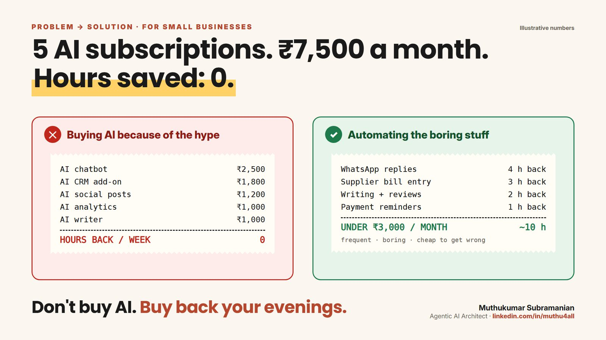

A Small Business Owner's Honest Guide: What to Automate with AI This Year
By Muthukumar Subramanian · Agentic AI Architect

It's 10:40 on a Saturday night in Coimbatore. The owner of a tiles and sanitaryware shop is still on WhatsApp.
"Is the 2x2 matt grey in stock?" "What time do you close Sunday?" "Send price list." "Bill copy please."
Forty messages, mostly the same six questions. This week the same owner got three sales calls for "AI solutions", a webinar invite saying agents will run the business by 2027, and a cousin's advice: "Just use ChatGPT, no?"
None of them answered the only question that matters: what should I actually automate, and what will it cost me?
That's the problem. Almost all the AI advice out there is written for companies with an IT team and a budget line. A small business owner has neither. Every subscription comes out of the owner's own pocket, and every mistake lands on the owner's own name.
The real risk isn't missing AI. It's paying for the wrong AI.
So here's my honest list. Five things worth automating this year, five to leave alone, and rough costs. All the rupee figures and hours below are illustrative: your numbers will be different, so treat them as a starting point.
One test before anything else
Automate what's frequent, boring and cheap to get wrong.
Leave alone what's rare, emotional or expensive to get wrong.
If a task fails that test, no tool will save it.
👉 [IMAGE: B-day03-2-in-article-the-receipt.png]
Caption: Five to automate now, with rough monthly costs and hours saved. All figures illustrative.
Five things to automate now
→ 1. The same twenty WhatsApp questions. Timings, price list, "is it in stock", "where's my order". Meta launched its Business Agent for WhatsApp in India this July, and plenty of local tools do the same. The rule: it answers the routine questions and hands anything about money, complaints or a big order straight to you. Rough cost: free to about ₹3,000 a month.
→ 2. Typing in supplier bills. Take a photo; AI reads the GSTIN, amounts and dates and fills the entry in your accounting software. You glance and approve. This is the one most owners underrate, because it's invisible work that eats evenings. Rough cost: often included in accounting software, or up to about ₹2,000 a month.
→ 3. The writing you never get to. Product descriptions, replies to Google reviews, the Diwali offer post, the same message in English and Tamil. Any general assistant works: ChatGPT, Gemini, Claude or Copilot. Read it before it goes out. Rough cost: free tiers, or a few hundred rupees a month.
→ 4. Payment follow-ups. Every Monday, a list of who owes what for how long, with a polite reminder drafted and a UPI link attached. You press send. Money comes in faster, and you didn't have to make the awkward call. Rough cost: usually covered by the tools above.
→ 5. Questions about your own numbers. Export last quarter's sales to Excel and ask: "Which 10 items haven't moved in 90 days?" "Which customers ordered less this Diwali than last?" You've had this data for years. Now you can ask it questions. Rough cost: the same assistant as number 3.
Five things to leave alone (for now)
→ Prices and discounts. Yesterday I wrote about an airline that had to honour a discount its chatbot invented. Your margin is too thin for that.
→ Anything that moves money on its own. AI can prepare the supplier payment. A human presses pay.
→ Your top 20 customers. The relationship is the business. Use AI to prepare for the call, not to replace it.
→ Hiring and firing. Don't let a tool silently screen people out. You won't know who you lost.
→ GST filing without your CA. Let AI prepare and reconcile; let your CA check and sign.
👉 [IMAGE: B-day03-3-in-article-the-test.png]
Caption: The 30-second test. Three questions decide whether a task gets automated, assisted, or left alone.
The hard parts
I'd be lying if I said this was plug-and-play.
→ Your data is messier than the demo. Item names typed five ways, half the stock never updated. AI on messy data gives confident wrong answers. Clean the price list first.
→ Subscription creep is real. Five tools at ₹1,500 each is ₹7,500 a month, ₹90,000 a year (illustrative). Start with one, and cancel anything that hasn't paid for itself in 30 days.
→ Tamil and mixed-language replies still slip. Test with your real customer messages before you switch it on.
→ Your staff may push back. Show them it removes the boring part of their job, not the job.
→ Customer data is your responsibility. Under India's DPDP rules, pasting your whole customer list into a random free tool is a bad idea. Use business plans with clear data terms.
How to start on Monday
Pick one item from the five. Write down how many hours it takes this week. Run the tool for 30 days. Count again. Keep it if it gave you hours back; cancel it if it didn't. That's the whole method.
👉 [GIF: B-day03-4-in-article-printing.gif]
Caption: The AI receipt for a small business. Five lines kept, five voided.
The opportunity
There are millions of small businesses in India, and almost none of them will hire an AI team. That's the gap.
→ Freelancers and students: "AI setup for local businesses" is a real service. Set up the WhatsApp agent, the bill scanning and the reminders for a fixed fee, then charge a small monthly amount to keep it running. Ten shops in your area is a business.
→ CA and accounting firms: bill entry and reconciliation done with AI lets a small team serve far more clients.
→ Tool builders: the winners will be WhatsApp-first, work in Indian languages, and be priced in hundreds of rupees, not dollars.
The best AI for a small business isn't the smartest one. It's the one the owner stops noticing because it just works.
Your turn 👇
If you could automate only one thing this month: WhatsApp replies or bill entry? Pick one.
Tag a business owner you know who's still replying to WhatsApp at 11 PM. This one's for them.